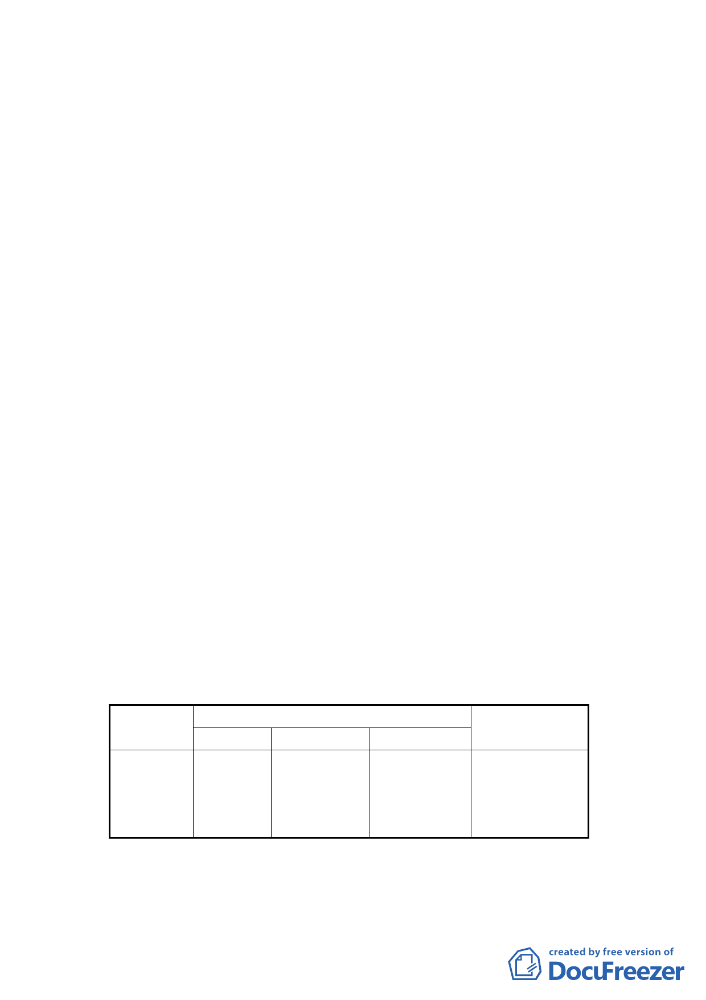

討論事項 三
案 名：變更臺北市松山區民生東路新社區特定專用區新東街及新
東街31巷交口西北側住宅用地為住宅用地（特）細部計畫
案
案情概要說明：
一、 計畫緣起：
（一） 本案係市府受理誠美建築開發股份有限公司申請「促進都
市再生 2010 年臺北好好看」之開發計畫（老舊社區組），
經市府審查通過推薦，爰依都市計畫法第 27 條第 1 項第 4
款提出本細部計畫變更案。本案經 98 年 6 月 23 日以府都
規字第 09831207000 號公告，98 年 6 月 24 日起公開展覽
30 天。
（二） 依 98 年 1 月 19 日本會第 590 次委員會議決議（略以）：
臺北好好看計畫案件逕由各專案小組進行審查後再提委
員會議審議。本案業於 98 年 7 月 28 日、11 月 11 日召開
2 次專案小組會議討論完畢。
二、 公展計畫內容概述：
（一） 計畫範圍與面積：位於民生東路新社區特定專用區內，新
東街及新東街 31 巷交口西北側，土地面積為 5,843 平方公
尺，土地使用分區為住宅用地，建蔽率 50％，容積率 200
％。另計畫範圍亦屬 96 年 7 月 18 日市府公告劃定之更新
單元。
（二） 計畫區現況：計畫範圍以住宅使用為主，一樓有一般商業
使用。基地內共有 15 棟建築物，屋齡為 27-37 年之 4-6 層
樓建築物，土地權屬皆屬私有。
（三）變更計畫內容：
1.變更土地使用分區：
位置
原計畫
變更內容
新計畫 面積(㎡)
變更理由
新東街及
新 東 街 31
巷交叉口
西北側
住宅用
地
住宅用地
(特)
5843平 方 公
尺
配合整體開發
計畫，變更原
計畫內容
2.土地使用分區管制：
(1) 使用強度：住宅用地(特)內之法定建蔽率為50％，容積率為200%。
(2) 本案建築基地得適用「徵求參與『促進都市再生 2010 年臺北好好
-4-